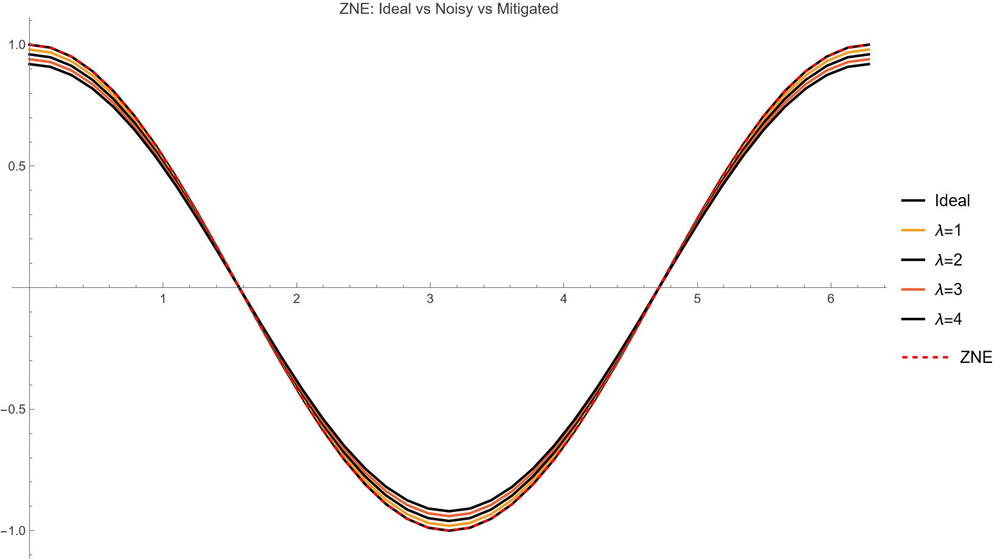
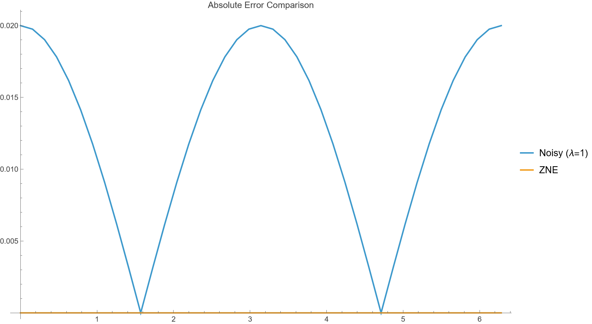

|ψ⟩
Zero-Noise Extrapolation
Interactive Mathematica 14.3 Demonstrator
Inspired by Temme, Bravyi & Gambetta · arXiv:1612.02058
Built with Wolfram QuantumFramework
Mathematica 14.3
QuantumFramework
Self-Contained
The Challenge
Quantum Noise is Unavoidable
🔬Real quantum hardware introduces decoherence and gate imperfections at every operation
📉Noisy expectation values deviate systematically from ideal — amplitudes shrink toward zero
❌Full error correction requires thousands of physical qubits per logical qubit — not yet practical
💰Current NISQ devices: 50–1000 noisy qubits — every gate adds error
💡 Can we mitigate noise without full error correction?
Core Concept
Zero-Noise Extrapolation
①Amplify noise intentionally at scale factors λ = 1, 2, 3, 4
②Measure ⟨Z⟩ at each noise level → collect E(λ₁), E(λ₂), …
③Fit polynomial to E(λ) and extrapolate to λ → 0
E₀λ→0
E₁λ=1
E₂λ=2
E₃λ=3
E₄λ=4
↑ Extrapolate back to zero noise
Richardson extrapolation — the same math used in numerical analysis since the 1920s
Project Structure
Self-Contained Demo
qedma-zne-mathematica-demo/
├── README.md ← Quick-start guide
├── src/
│ └── ZNEDemo.wl ← Reusable package · 5 public functions
├── notebook/
│ ├── ZNE_Demo.nb ← Interactive notebook with Manipulate UI
│ └── exports/
│ ├── ZNE_Demo.pdf ← Exported PDF
│ └── figures/
│ ├── zne_main_plot.png
│ └── zne_error_plot.png
└── docs/
├── validation-report.md ← Numeric evidence
├── references.md
└── env-check.md
✓ Clone & Run
✓ No external dependencies
✓ Portable across machines
Package
ZNEDemo.wl — Clean API
ZNE`MakeCircuit[θ, nQubits, depth]
ZNE`IdealExpectation[θ]
ZNE`NoisyExpectation[θ, λ, "BaseNoise" → 0.02]
ZNE`ZNEEstimate[θ, {1,2,3,4}, order]
ZNE`GenerateSweep[θList, λList, order]
→ "IdealData", "NoisyData", "ZNEData", "Meta"
NoiseModel
BaseNoise
Shots
Seed
Observable
Physics
Two Noise Models
DepolarizingEnd
Single depolarizing channel applied once at circuit end.
ρ → (1 − p)ρ + p · I/2
⟨Z⟩_noisy = (1 − λ·p₀) · ⟨Z⟩_ideal
DepolarizingPerGate
Channel applied after each gate — stronger degradation for deeper circuits.
p_eff = 1 − (1 − λ·p₀)^depth
⟨Z⟩_noisy = (1 − p_eff) · ⟨Z⟩_ideal
Results
Ideal vs Noisy vs ZNE

■ Black = Ideal (Cos θ)
■ Colors = Noisy at λ = 1,2,3,4
⬥ Red dashed = ZNE ≈ Ideal ✓
Analysis
Error Comparison

ZNE reduces absolute error to near zero across all θ values
Noisy MAE ≈ 0.013 → ZNE MAE ≈ 0.000 · ~100% improvement
Notebook
Interactive Manipulate UI
🎚️Base Noise p₀
0 → 0.1 (step 0.005)
🔄Noise Model
DepolarizingEnd | DepolarizingPerGate
📊Lambda List
{1,2,3,4} or {1,1.5,2,2.5,3}
📐Polynomial Order
1, 2, or 3
🎯Theta Resolution
10 — 80 points
🔍Probe θ (fit diagnostic)
0.1 — 6.0
⚡ All three plots update in real-time as you adjust controls
Quality
Automated Validation
| Check | Description | Metric | Result |
|---|
| 1 | Low noise (p₀ = 0.001): ZNE ≈ Ideal | max|ZNE − Ideal| ≈ 10⁻¹⁵ | ✅ PASS |
| 2 | ZNE improves over noisy baseline (p₀ = 0.05) | ~100% error reduction | ✅ PASS |
| 3 | PerGate noise > End noise | Equal for single gate (expected) | ⚠️ Expected |
🔬Validation runs automatically inside the notebook — reproducible on any machine
📄Full numeric report generated in docs/validation-report.md
Discussion
Limitations & Extensions
⚠️ Limitations
📈Variance amplification — extrapolation magnifies statistical noise at high p₀
🔢Polynomial instability — high-order fits can overshoot with few data points
⏱️Sampling overhead — each λ requires additional circuit executions
🚀 Future Extensions
🔗Multi-qubit circuits & entangling gates
🎲Probabilistic Error Cancellation (PEC)
💻Integration with real hardware backends
📊Comparison with other mitigation techniques
🙏
Thank You
Try it yourself:
PacletInstall["Wolfram/QuantumFramework"]
Open notebook/ZNE_Demo.nb → Evaluate All Cells
📄 arXiv:1612.02058
📄 arXiv:1805.04492
Questions?